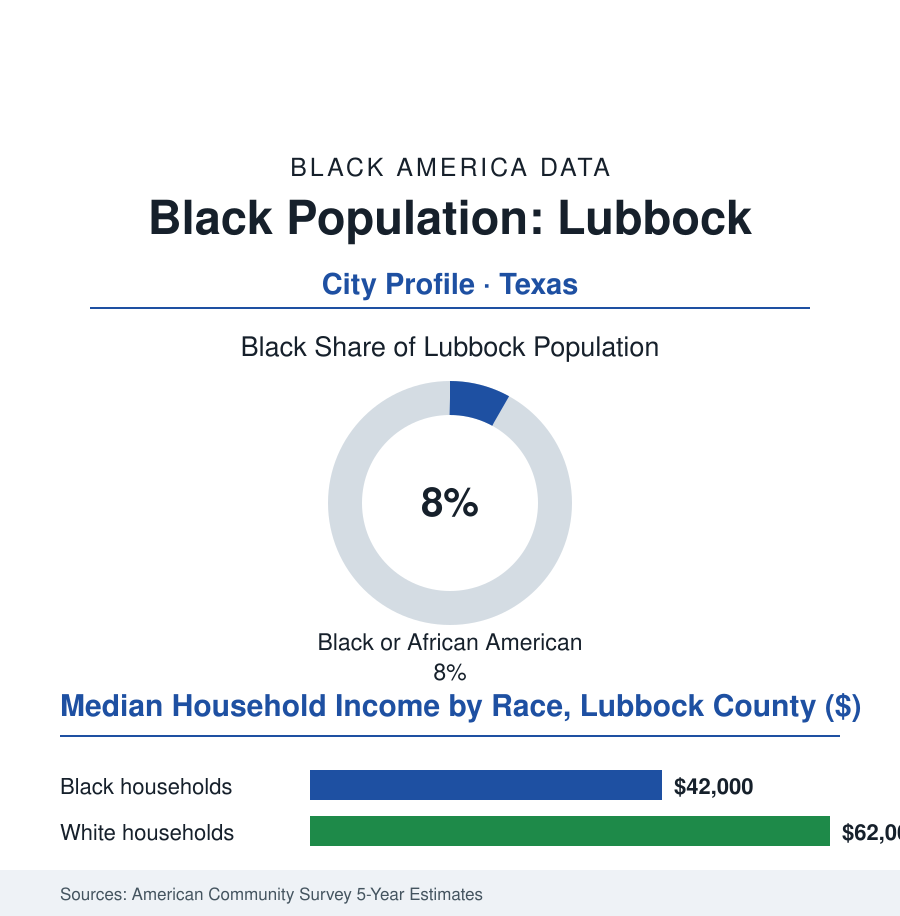

Black Cities
Black Lubbock: 22,000 People Under the Big Sky
Lubbock's Black community — about eight percent of the South Plains cotton capital — kept its east-side institutions through the cotton century and into Texas Tech's, at the far edge of Black Texas. The numbers.

Lubbock's Black community numbers roughly 22,000 people — about 8% of the city's 265,000 residents — in the South Plains cotton capital, the largest city of the Llano Estacado, where the east side's churches and schools have carried a compact community's full weight at the western edge of the Black South's map. This article reads Lubbock's numbers.
Cotton, Tech, and the East Side
The founding economy was the Plains' own: the cotton that made the South Plains the world's largest contiguous cotton patch, its gins and compresses and the railroad that hauled it, drawing the Black workforce that settled Lubbock's east side in the era's standard geography — the community forming around the churches and the segregated school whose name, Dunbar, the alumni keep as Amarillo's keep theirs, a pantheon of one-named schools (for the poet) marking the Black West's whole map. Texas Tech's founding in the 1920s added the city's second engine, and the university's own integration chapter — late, contested, in the record — began the long pipeline story the modern data tell: the east side's graduates ascending to the big red campus across town, the university's Black enrollment and faculty rows climbing at the pace of the state's other flagships, its medical school and health sciences center becoming, as in Tyler, the community's professional ladder and largest employer in one. The civil-rights decades ran the Plains course, and the city's file holds the era's Lubbock entries (the school orders, the public accommodations' surrender, the tornado of 1970 whose path through the city's north and east wrote the disaster file's local chapter — the rebuilding's geography, in the housing data, sorting by the era's resources as disaster rebuilding does). The cultural file claims the city's giants without regard to the percentage: the Lubbock sound — Buddy Holly's city, and beside the rock-and-roll monument the east side's own gospel and R&B lineages, the cotton-patch soul of the Plains in the record — and the Juneteenth observances the city keeps at civic scale.
The Far Edge's Ledger
The health rows belong in the ledger for a reason specific to the Plains: distance. The east side's elders are served by a medical district that draws patients from a hundred miles in every direction — and the specialty file's arithmetic runs in reverse here, the regional center in town, its rows open to the community that hosts it. The access fight in Lubbock is not the journey. It is the same appointment, insurance, and trust files as everywhere in this book — fought, for once, at home.
The modern balance runs in the county survey's familiar hand: the Black household median in the low forty-thousands against the low sixty-thousands beside it, the east side's aging stock and the growth's southwestward run (the city's expansion drawing the cross, in the development map, away from the historic community), the poverty rows concentrated where the cotton century left them. The pipelines are the region's: Tech and its health sciences center, the community college district's workforce rows, the cotton economy's mechanized remnant and the wind fields spreading across the caprock with their service towns. The demographic rows show the far edge's distinct position: the Black share steady under a tenth while the Hispanic share — the Plains' great modern migration, drawn by the same fields and plants — approaches half the city, the east side's institutions now the senior Black presence in a majority-minority city whose future is being written in two languages and three histories. The community's own data of endurance are its institutions' ages: the churches past their centennials on the east side, the Dunbar alumni's scholarships still awarded, the funeral home's fourth generation — the full kit, as in Amarillo, carried at eight percent by the descendants of the cotton rows, under the biggest sky in this atlas. The file's verdict on the far edge is the community's on itself, recorded in its anniversary books: small was never the same as scattered, and rooted was never the same as stuck.
Reading Lubbock's Numbers
Twenty-two thousand people, eight percent, one cotton capital: Lubbock is the cities file's westernmost chapter — Black Texas at its far edge, entire. The census counts the share. The east side's homecoming — the church fans, the alumni jackets, the whole grid lit — counts the substance, and the percentage keeps losing.
More in Black Cities
Black Atlanta: Population, Distribution, and Growth of a Black Metropolis
Metro Atlanta holds more than two million Black residents — roughly one in three, second only to New York. The suburban distribution, migration history, and composition of Black Atlanta in the census data.
Black New York: The Largest Black Population in America
The New York metropolitan area holds about 3.4 million Black residents — more than any metro in the nation — and the city itself about two million. The census profile.
Black Washington: The District and the Metro
The Washington metro holds about 1.6 million Black residents, and the District itself — long a majority-Black city — now records a Black share near 41 percent. The census profile.
Source: U.S. Census Bureau, 2020 Census and American Community Survey 5-year estimates; City of Lubbock and Lubbock County records; Texas Tech University data.